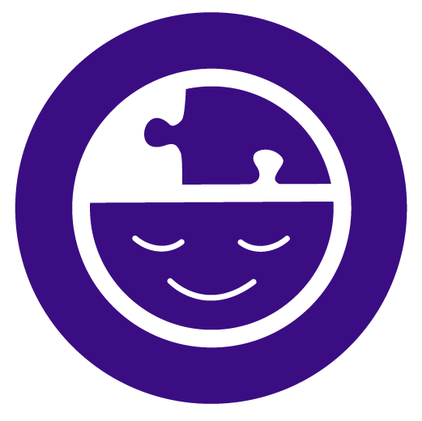
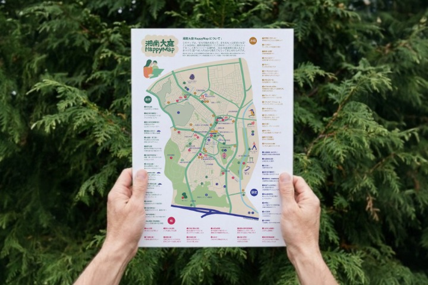
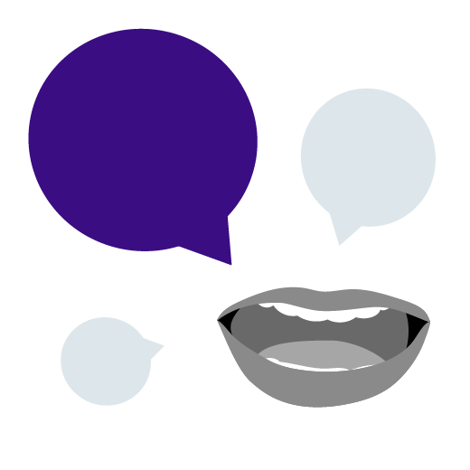
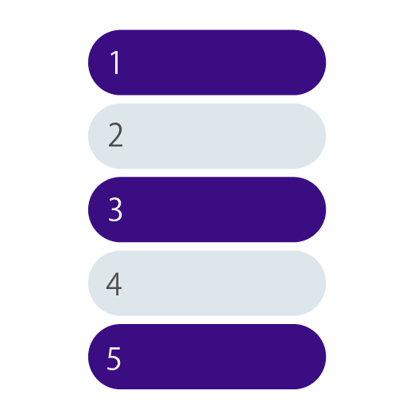
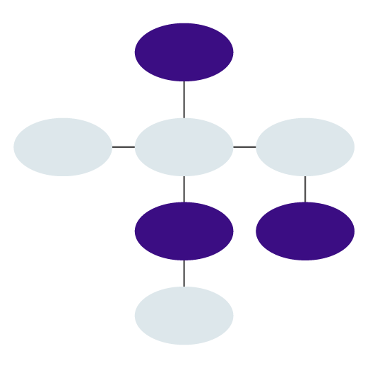
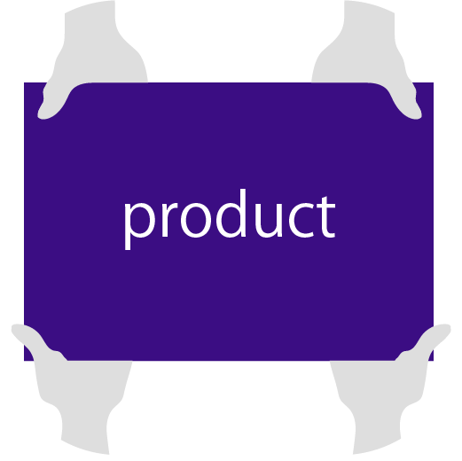

design for social impact
“ 難しい ” を “ 伝わる ” に 。
- 環境問題 / 地域活動 / 行政 / NPO -
“社会課題 × デザイン”
複雑な情報や想いを整理し、伝わる形へ
「活動内容がうまく伝わらない」
「情報が多く、整理しきれない」
そんな悩みに寄り添いながら、
環境問題や社会課題を伝わる形へデザインします。
Service
サービス
内容が固まっていない段階からでも、一緒に整理しながら進めます。
-
- Webサイト制作
- 活動内容や想いを整理し、伝わるWebサイトを制作します。
NPO / 行政 / 社会活動団体向け
構成設計 / デザイン / 簡易実装 対応

- 図解・イラスト制作
- 複雑な情報を、直感的に理解できる形へ整理します。
説明資料 / SNS / Web掲載用など向け
社会課題や背景情報の図解化
-
- マップ制作
- 地域の情報や課題を、わかりやすく可視化します。
地域活動 / まちづくり向け
情報共有や理解促進をサポート
Case
実績
地域まちづくりマップ制作
市民の方々から集められた地域情報を、わかりやすくマップにしました。 関係者の方々とやり取りを重ねながら進めました。

Process
制作過程
-

- Step1
- ヒアリング
ご相談内容をお聞きします。
-

- Step2
- 情報整理
伝えたい内容を整理します。
-

- Step3
- 構成・図解
わかりやすい構成を考えます。
-
- Step4
- デザイン制作
HP・図解・マップを形にします。
-

- Step5
- 納品
更新/運用もご相談いただけます。